Zusammenfassung Ethik der Sozialen Marktwirtschaft#
Wirtschaftsethik#
Wirtschaftsethik: WIssenschaft der Moral im Wirtschaftssystem
Wirtschaft meint hier die neoklassische!
Intentionalistischer Fehlschluss: von nicht intendierten handlungsfolgen auf Ziele schließen (Verschwörung)
Moralistischer Fehlschluss: Zieländerung statt Anreizänderung
Praktischer Syllologismus#
Wie argumentiere ich für Handeln?
Schritt |
Erklärung |
|---|---|
1. Normative Prämisse |
Wollen |
2. positive Prämisse |
Können |
3. Normative Conclusio |
Sollen |
mögliche Fehler:
Normativistischer Fehlschluss: 1 ohne 2
Naturalistischer Fehlschluss: 2 ohne 1
Non-Sequitor Fehlschluss: keine ausreichende Prämisse
Ordonomik#
Forschung von Ordnungsystemen und Moral, bestehend aus:
Systemethik (Warum Kapitalismus)
Organisationsethik (Greenwashing)
Prozessethik (Lobbyismus)
Betrachtung von
Semantik |
Sozialstruktur |
|---|---|
Normative Begriffe |
Institutionelle Rahmenordnung |
Gesellschaftlicher Diskurs |
Politik |
Denkkategorien |
Anreizstrukturen |
Drei Ebenen Spiel#
Basisspiel: Handlungen
Meta-Spiel: Sozialstruktur
Meta-Meta-Spiel: Semantik
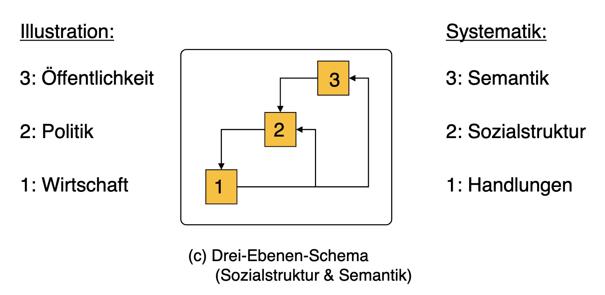
Orthogonale Positionierung (Semantik)#
Komplementarität von Eigeninteressen und Fremdinteressen / Moral
gegenseitige Besserstellung
=> keine Zügelung der Interessen durch Appelle, sondern Anreizänderung
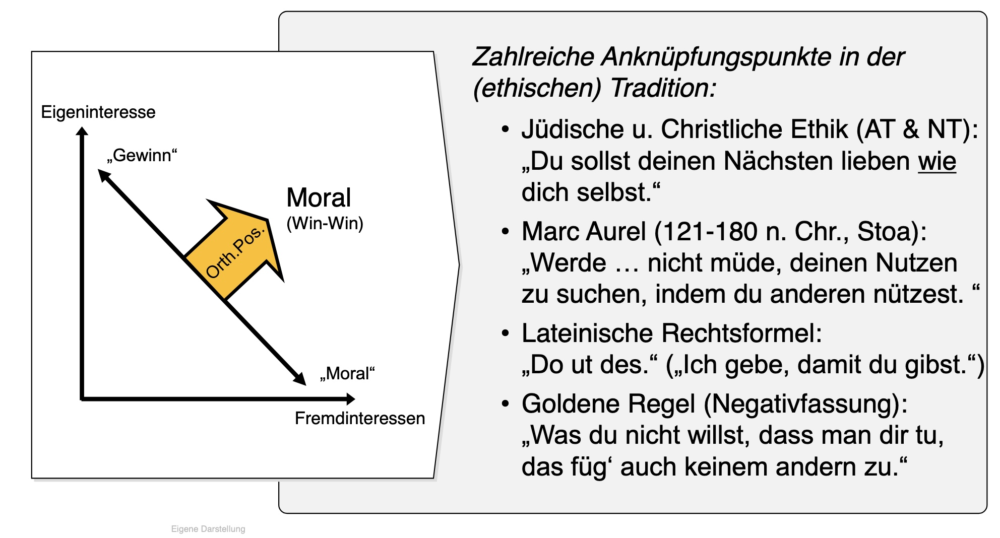
Ursprung der Sozialen Marktwirtschaft#
warum haben wir eigentlich diesen Kapitalismus
Markt und Moral#
Märkte = moralische Skepsis, da kein (helfer)-moralisches Handeln benötigt
Helfermoral |
Marktmoral |
|---|---|
persönliches Opfer |
Befolgung allgemeiner Regeln |
identifizierbarer Addressat |
nicht-identifizierbarer Addressat |
= Kleingruppenmoral (Nullsummengesellschaft) |
= Gesellschaftsmoral (Win-Win) |
moderne Gesellschaft:
zu groß für Helfermoral
gesundes Maß Eigeninteresse
Markt = braucht nur Ordnungsrahmen
bringt Frieden = keine zwangsläufige Übereinstimmung mit Handelspartnern
bringt Freiheit = statt Zwang, nur Regeln
Wettbewerb#
Wettbewerb nach Hayek#
= Entdeckungsverfahren
Marktpreise = Informationen aller Individueen
dezentrale Informationsverarbeitung
Systemvergleich |
Marktwirtschaft |
Planwirtschaft |
|---|---|---|
Wissensverarbeitung |
dezentrales Wissen, Marktpreise = Information |
zentralisiert = unmöglich, |
Rechtsrahmen |
allgemeine Spielregeln, Ordnungsrahmen |
Marktinterventionen, Befehle = parteiischer Rechtstaat |
Moral |
keine Moral benötigt |
allumfassender Moralkodex, alle müssen unterstützen |
Strukturwandel |
anonym durch Preise, kein Schuldiger |
durch politischen Befehl = offen für Proteste |
Demokratie |
Beschränkung der D. auf lösbare Probleme |
D. muss alles entscheiden => Planungsbehörde = Diktatur |
Fehlerkorrektur |
durch Demokratie |
ist Systemangriff = Knast |
„Planning for Freedom“ |
„Planning for Interference“ |
Wettbewerb nach Eucken#
= Entmachtungsinstrument
Meritokratie = Auf- und Abstieg
keine gesellschaftlichen Schichten mehr
Mittel zum Zweck
Entmachtung von Staat und Reichen
mehr individuelle Freiheit
Soziale Marktwirtschaft: Wirtschafts- und Sozialordnung zur Wohlstandserreichung durch Wettbewerb
staatliche Ordnung = möglich
Betrachtung qualitativ statt quantitativ
für Menschenwürde und Freiheit
weder Laissez Faire noch Planwirtschaft
Prinzipien Sozialer Marktwirtschaft: (Auswahl)
Staatspolitische Prinzipien |
Konstituierende Prinzipien |
Reglierende Prinzipien |
|---|---|---|
Ordnungsrahmen |
Preis + offene Märkte |
Wettbewerbspolitik |
gegen wirtschaftliche Machtgruppen |
Wettbewerb = Leistungsanreiz |
Einkommenspolitik |
Vertragsfreiheit |
Korrektur Marktversagen |
Vergleich Eucken Hayek#
Eucken |
Hayek |
|
|---|---|---|
Wettbewerb |
Entmachtungsverfahren |
Entdeckungsverfahren |
Theorei |
der Macht |
des Wissens |
Normativ |
Gerechtigkeit durch Freiheit |
Freiheit durch Gerechtigkeit |
Aufgabe der Ökonomik:
Rationalisierung von Politik
Wissenschaft der Gesellschaft
Soziale Dilemmata#
aus der Spieltheorie und Institutionenökonomik
Dilemma: Situation, in der rationale Akteure gemeinsames Ziel verfehlen und kollektiv unter Möglichkeiten bleiben
einseitiges Dilemma:
Antizipation einer Ausbeutung verhindert Kooperation
nur einer muss sich ändern
=> individuelle Selbstbindung
zweiseitiges Dilemma
jeder verhält sich wie befürchtet
alle nutzen alle aus (bsp. Gefangenendilemma)
=> kollektive Selbstbindung
Darstellung#
mit Payoff Matrix, hier am Beispiel Gefangendilemma
Spieler 1 \(\downarrow\) \ Spieler 2 \(\rightarrow\) |
gestehen |
nicht gestehen |
|---|---|---|
gesstehen |
|
4, 1 |
nicht gestehen |
1, 4 |
|
[2,2]= Nash Gleichgewicht3,3= Pareto Optimum
Nash-GG: dominante Strategiekombination, von der niemand abweichen will
Pareto-Optimum: Strategiekombination, in der niemand bessergestellt werden kann, ohne anderen schlechter zu stellen
Arten von Spielen#
nach Bowles
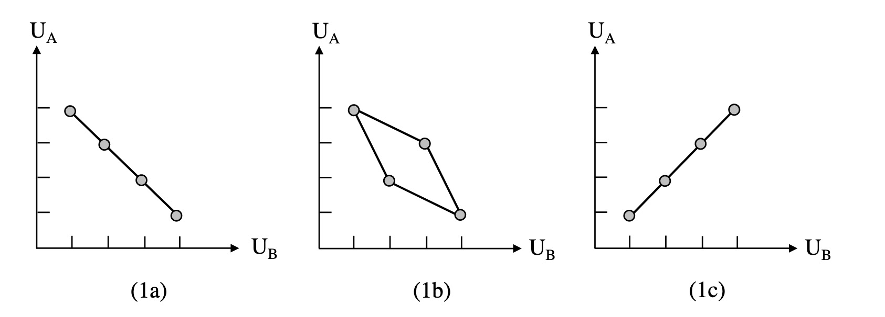
Interessenharmonie (1a):
alle haben common-Interest
kooperatives Spiel (Win-Win)
aber Anreizstruktur verhindert Beste Lösung
Konfliktspiel (1c):
alle haben unterschiedliche Interessen
nicht kooperatives Spiel (Win-Lose)
mixed motif (1b):
Zwischending
Markt aus spieltheoretischer Sicht#
Markt = wechselseitige Besserstellung durch drei Dilemma
zwischen Anbieter und Nachfrager individuell
unerwünschtes Dilemma = Vertragsrecht
innerhalb einer Gruppe
Kartelldilemma = erwünscht
zwischen den Gruppen
Monopoldilemma = unerwünscht = Wettbewerbsrecht
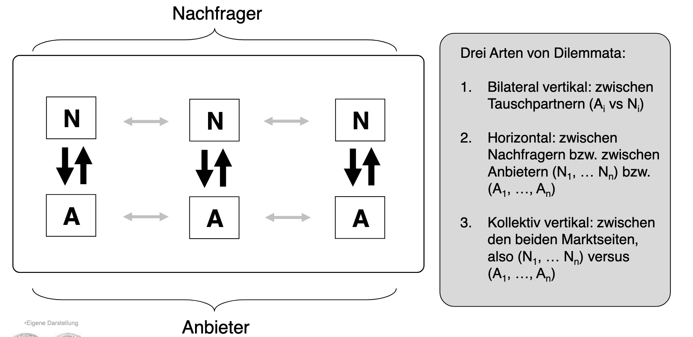
I. individueller Tauschakt#
zwischen zwei anonymen Partnern
Problem:
jeder kann anderen betürgen und mit Geld / Ware abhauen
kein Tausch kommt zustande
Tausch brechen? |
ja |
nein |
|---|---|---|
ja |
|
1, 4 |
nein |
4, 1 |
|
Lösung:
Vertragsrecht mit Sanktionen
oder Wettbewerbsauschluss
Tausch brechen? |
ja |
nein |
|---|---|---|
ja |
|
1, 4*-x* |
nein |
4*-x*, 1 |
|
II. innerhalb einer Gruppe#
Problem:
Risiko einer Kartellbildung
Firmen verabreden sich zur Schädigung der Wettbewerber
Lösung:
individuelle Kartellteilnehmer haben Anreiz zu hintergehen
instabiles Kartell bricht zusammen
Kartellversprechen einhalten?
\(U_1 / U_{rest}\) |
ja |
nein |
|---|---|---|
ja |
|
1, 4 |
nein |
4, 1 |
|
Kartelle sind instabil und erreichen ihr Ziel nicht, das ist gesellschaftlich erwünscht!
III. zwischen den Gruppen#
Problem:
Nachfrager / Anbieter können Monopol / Monopson sein
auch durch Kartelle
hier macht Abweichung dann keinen Sinn
Kartellieren?
Anbieter / Nachfrager |
ja |
nein |
|---|---|---|
nein |
Monopson |
Polypol |
ja |
Bilaterales Monopol |
Monopol |
Payoffs dazu:
A / N |
j |
n |
|---|---|---|
n |
1, 4 |
|
j |
|
4, 1 |
Lösung
Kartelle verbieten
mit Strafen belegen
Nachfrager / Anbieter |
ja |
nein |
|---|---|---|
nein |
1, 4-s |
|
ja |
|
4 - s, 1 |
=> wir verwehren Kartellen das Vertragsrecht!
Anwendungsfälle#
Soziale Marktwirtschaft#
nach Müller Armack
Staat = Bereitstellung öffentlicher Güter
verstehen von Umverteilung als komplexer Tausch
Statt Win-Lose Tradeoff
Win-Win, wenn richtig ausgestaltet
Sozialpolitik = Überwindung sozialer Dilemmata
Kriterium: Marktkonformität, bspw.
Förderung des Marktmechanismus (Kartellamt)
Stabilisierung der Wirtschaft (Einkommenspolitik)
Rahmenordnung setzen
Eingriffe also möglich, bspw. Einkommensumleitung
=> zwischen Laissez Faire und Szialismus = effizienter
Beispiele
Versicherungssystem |
Kreditsystem |
|---|---|
Arbeitslosengeld, Pflege etc |
Bildungssystem etc, |
=> erlaubt Risiko = mehr Produktivität |
=> erhöht Produktivität |
Umweltpolitik#
Problem: Umweltschutz ist öffentliches Gut
Unterversorgung damit
und Übernutzung wie Allmende Gut (CO2 Speicher Atmosphäre)
Güterkategorien |
rivalisierned |
nicht rivalisierend |
|---|---|---|
exkludierbar |
privates G. |
Club-Gut |
nicht exkludierbar |
Allmende Gut |
Öffentliches G. |
Regulierung#
mithilfe eines Umweltoptimums
nicht das Maximum an CO2 Einsparung bspw.
sondern die Kosten und Nutzen in Einklang bringen

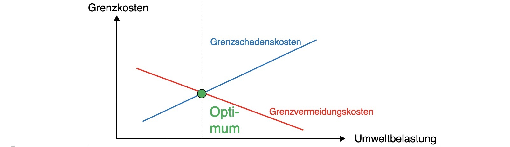
Coase Theorem#
Ronald Coase = Ökonom mit Nobelpreis
Auffassung von Umweltverschmutzung als Nutzungskonflikt
bspw. Fischer und Fabrik an Fluss
Nutzungskonflikt um suaberes Wasser
nicht Täter-Opfer!
Fabrik = auch gesellschaftlichen Fortschritt und Wachstum
Lösung:
Verhandlungen zwischen beiden
=> Problem sind nicht Unternehmen, sondern Politikversagen
Instrumente#
Problem ist Externalisierung der Kosten!
also Internalisierung der Kosten
Möglichkeiten der Internalisierung (GVK = Grenzvermeidungskosten)
Auflage |
Steuer |
Zertifikatehandel |
|
|---|---|---|---|
Darstellung |
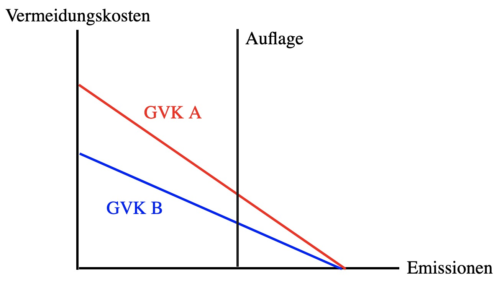 |
|
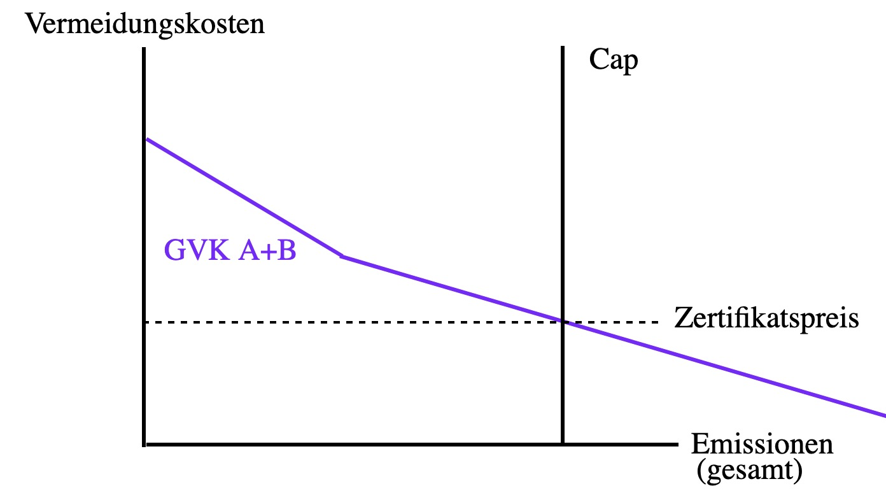 |
Festlegung |
gleiches für alle |
Schwierig, über Optimum |
nur die Zahl der Zertifikate |

Probleme:
Auflagen: nur Einsparung bis Grenze, nciht darüber hinweg
Steuer:
Festlegung ist schwierig
aber immerhin Innovationsvorteil gegenüber Auflage
Zertifikate
Preisänderungen = weniger Planabrkeit
Aber einfache Festsetzung und effiziente Allokation
Marxismus#
Marx: unterläuft Fehler bei Analyse des Arbeitsmarktes
Analogie von Gütermarkt
mit unbegrenztem Angebot in der langen Frist
Kosten Gut = Produktionskosten
auf Arbeitsmarkt
mit angeblihc unbegrenzten Arbeitern (industrielle Reservearmee)
Kosten Arbeit = Reproduktionskosten
Schlussfolgerung Marx
Arbeiter werden immer nur Existenzminimmum als Lohn erhalten
jeglicher Mehrwert ans Kapital
Marx |
Realität |
|---|---|
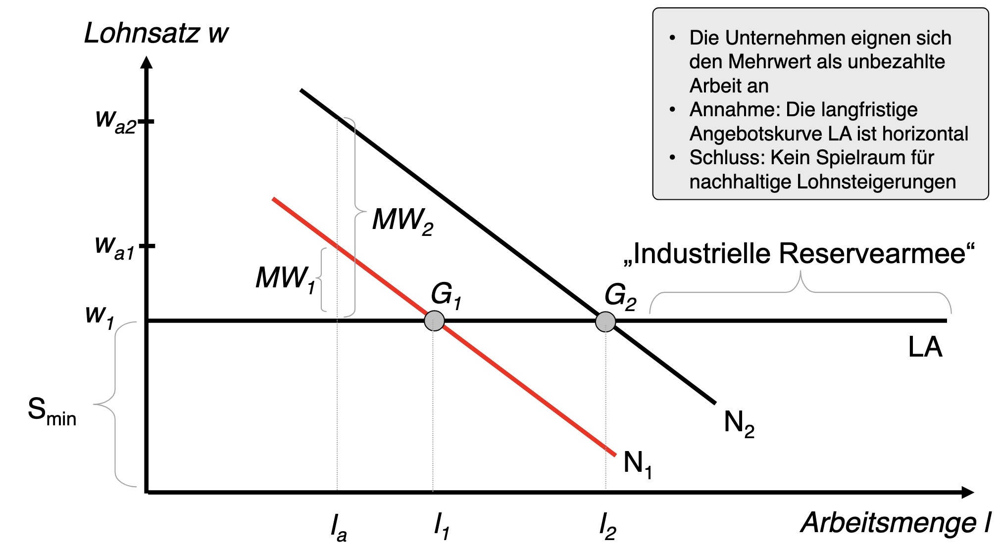 |
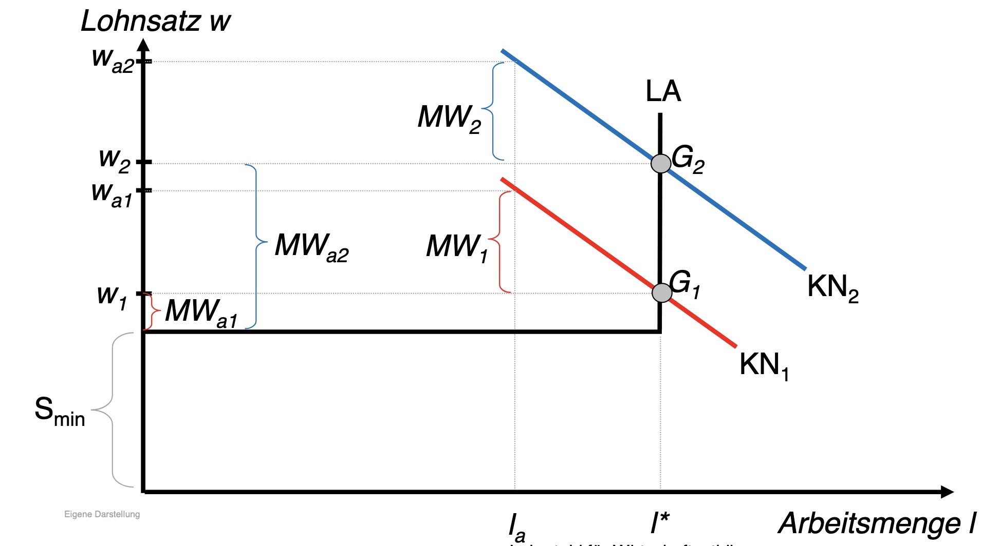 |
eigentlich werden Unternehmen ausgebeutet im Wettbewerb (naja!)
Nachhaltigkeit#
Semantik der modernen Gesellschaft
Moral aus Nullsummengesellschaft
Annahme: Wachstum = Umweltverschmutzung
Annahme der „Grenzen des Wachstums“
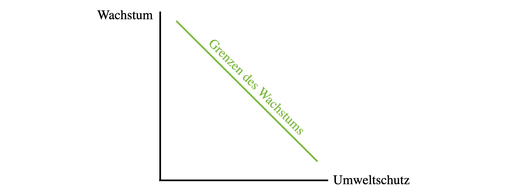
Sozialstruktur der Gesellschaft:
passt nicht zu Tradeoff, sondern Win-Win
Wachstum kommt von Innovationen
Innovationen machen uns erst umweltverträglich
Lösung: Nachhaltigkeitsbegriff
semantische Innovation
mehrere Sektoren umfassend (Ökonomie + Ökologie)
globale Ebene mit Regelkonsens
„Wachstum der Grenzen“
Konsensorientiert: gesellschaftlicher Umweltschutz + wirtschaftliche Wertschöpfung
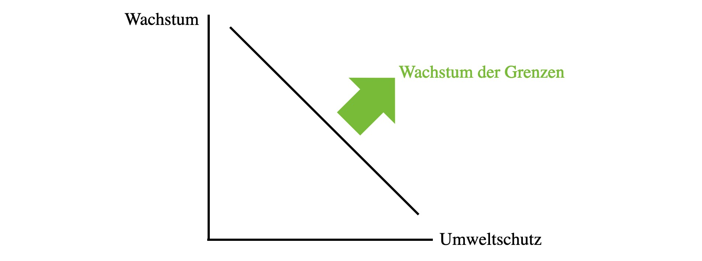
=> durch semantische Innovation wird Konflikt zw. Wachstum und Umweltchutz befrieidigt
Bindungen#
werden in Unternehmensgovernance genutzt, um Dilemma zu überkommen
Governance: Ordnung zur Konfliktlösung, für gegenseitige Besserstellung
Bindungen
beugt Ausbeutungsangst vor
erlaubt Risikoinvestments erst
„Freiheit durch Bindung“
Arten von Bindungen |
Selbstbindung |
Bindungsservice |
|---|---|---|
Zweiseitiges Dilemma |
kollektive Selbstbindung |
Kollektiver Bindungsservice |
Einseitiges Dilemma |
individuelle Selbstbindung |
individueller Bindungsservice |
Arten von Bindungen#
Unternehmen haben gesellschaftliche Aufgaben
Nachhaltigkeit
Risikovorsorge
Innovation
Nachhaltigkeitsmanagement#
am Beispiel Lammsbräu
Problem:
Lammsbräu will Öko-Hopfen von Bauern
diese müsssen in Bio-Landwirtschaft investieren
machen sie nicht, da ausbeutbar
Lösung:
individuelle Selbstbindung von Lammsbräu
garantierte Absatzmenge nach Investition
und Hilfe bei Umbau mit von L. bezahltem Manager
bei Bruch, also Investition x verloren
=> individuelle Selbstbindung erlaubt Pareto-Optimum und dadurch mehr Nachhaltigkeit
Risikomanagement#
am Beispiel Krupp
Problem:
Seuchenlage in Fabriken
katastrophale Gesundheitslage in Essen
wenig Krankenhäuser
Arbeiter hatten keinen Anreiz, in Krankenversicherung einzuzahlen
gingen bei Krankheit in die Fabrik
Arbeiter: in Krankenkasse einzahlen?
Arbeiter 1 / arbeiter 2 |
ja |
nein |
|---|---|---|
ja |
|
4, 1 |
nein |
1, 4 |
|
Lösung:
Service für kollektive Selbstbindung
verpflichtende Krankenkasse mit Zuzahlung
erlaubt Krupp bessere Planung = mehr Risiko = bessere Produkte
Korruption#
= Missbrauch anvertrauter Entscheidungsrechte
ob privat bei Unternehmen
oder staatlich
vielfältiger Schaden auf BIP, Gesundheit, Wachstum etc.
Problemanalyse#
hier in einem privaten Unternehmen
A = Agent in Unternehmen, vergibt Auftrag an Lieferant
P = Prinzipal, Eigentümer des Unternehmens
K = Lieferant, besticht A aus schwarzer Kasse
Folgen:
Vertragsbruch gegenüber Eigentümer, ineffiziente Vergabe
aber Tat und Täter unsichtbar (victimless Crime)
da Informationsbarriere
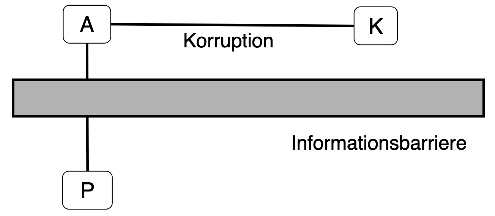
da keine Information über Tat, niemand Anreiz Tat zu gestehen!
Strafrecht konzentriert sich nur auf A und K
Lösung#
auf bestechendes Unternehmen einwirken
hier Informationsbarrierre geringer
da K im Auftrag von Eigentümer
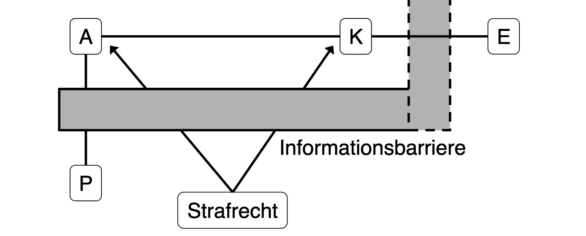
warum sollte E das machen?
Korruptionswettbewerb erhöht Kosten für alle = Zweiseitiges Dilemma
Außerdem: Whistleblower zum Geständnis bewegen
es gibt meist Mitwisser im Unternehmen
haben Angst vor sozialer Ächtung (c)
=> anonyme Berichte
Davor:
danach:
Alternativ: differenzierte Sanktionen = Kronzeugenregelung
Zivilgesellschaft#
NGOS
auf Inputseite wie Unternehmen
Konkurrenz um Geld, Zeit, Einfluss
aber keine Kontrolle auf Outputseite
da kein Wettbewerb
Thema Nahrungsmittelspekulation#
NGOs sagen, Nahrungsmittelspekulation treibt Volatilität
wo sie recht haben: Weltbank
aber naja, lets get started
Investment Fonds sind eigentlich gut, weil:
wie Versicherungsanbieter
Risikoübernahme
Planung und Preisglättung
also Semantik muss geändert werden:
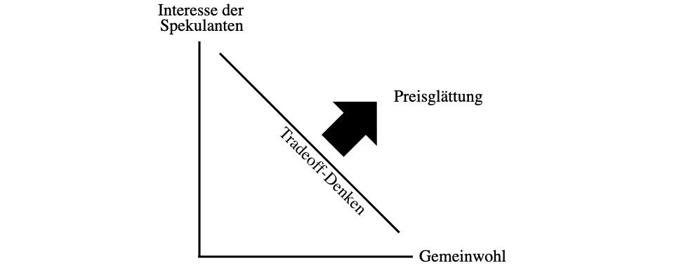
echte Ursachen von Nahrungsmittelknappheit in Krisen
Exportbeschränkungen
Biokraftstoffe
Ausweitung der Nachfrage durch Subventionen
Ursachen für Ausweitung Angebot (langfristig)
Innovation (Maschinen): vor allem seit 1990
mehr Dünger
mehr Bewässerung
mehr Fläche
=> Marktwirtschaft ist toll und so
Nicht alles mit barer Münze nehmen#
manchmal muss man Pies kritisch gegenüber stehen!